33 Conditional Randomization
A Campaign Finance Example
$$
Conditionally Randomized Experiments
What is conditional randomization?
- So far, we have focused on the case that treatment is randomized without looking at anything else.
- Formally: \(W_1 \ldots W_n\) are independent of \(\{X_1,Y_1(0), Y_1(1)\} \ldots \{X_n, Y_n(0), Y_n(1) \}\).
- This is not the only way to randomize!
- Suppose I suspect phone calls to older people to pay off more than calls to younger ones.
- Maybe older people have more money to spend on campaigns.
- Maybe they don’t get as annoyed about getting phone calls as young people .
- I might want to choose the probability a person gets treated (i.e. called) as a function of their age.
- In conditionally randomized experiments, that’s what we do.
- We look at the covariates \(X_1 \ldots X_n\) when we randomize. But only the covariates.
- Formally: \(W_1 \ldots W_n\) are conditionally independent of \(\{Y_1(0), Y_1(1)\} \ldots \{Y_n(0), Y_n(1)\}\) given \(X\).1
- We’ll focus on the case that each \(W_i\) is a coin flip with heads probability depending on \(X_i\).2
The Idea


- To make things simple, let’s look at a subset of our population.
- We have grouped everyone by age to give us two age groups—a binary covariate.
- As before, everyone has two potential outcomes— treated and untreated.
- We start with two potential outcomes for each person in our population.
- Those are the connected dots we see in the plot.
- Then we sample from our population.
- This is random, too.
- Each one flips a weighted coin to determine whether they’re treated. A coin that depends on their age.
- This is random. Different things happen each time.
- But the overall pattern is consistent.
- Most of the green dots are on the right.
- It’s mostly 75-year-olds getting called.
- The heads probability of their coin is 0.87.
- Most of the red dots are on the left.
- It’s mostly 55-year-olds getting emailed.
- The heads probability of their coin is 0.35.
- Most of the green dots are on the right.
What Happens to Within-Group Means


- We start with two potential outcomes for each person in our population.
- Those are the connected dots we see in the plot.
- At each level of \(X\), these potential outcomes have a mean.
- Then we sample from our population.
- This is random, too.
- These have a mean, too. And it is, of course, random. It changes if our sample changes.
- Each person in the sample flips a weighted coin to determine whether they’re treated.
- ⦻ marks the potential outcomes that don’t happen.
- We can look at the means of people who actually flip ‘heads’ and ‘tails’, too. More randomness.
- Our sample has a mean within in group, too. A random one.
How different are these means?
Locked (Week 0)
What Happens to (Not Within-Group) Means


{kind=link}
{kind=link}
{kind=link}
{kind=link}
{kind=link}
{kind=link}
{kind=link}
{kind=link}
{kind=link}
{kind=link}
{kind=link}
{kind=link}
{kind=link}
{kind=link}
{kind=link}
{kind=link}
{kind=link}
{kind=link}
- We start with two potential outcomes for each person in our population.
- Those are the connected dots we see in the plot.
- These have a mean outright—ignoring \(X\). Often, that’s what we’re interested in.
- Then we sample from our population.
- This is random, too.
- These have a mean, too. And it is, of course, random. It changes if our sample changes.
- Each person in the sample flips a weighted coin to determine whether they’re treated.
- ⦻ marks the potential outcomes that don’t happen.
- We can look at the means of people who actually flip ‘heads’ and ‘tails’, too. More randomness.
How different are these means?
Locked (Week 0)
Why? Covariate Shift.
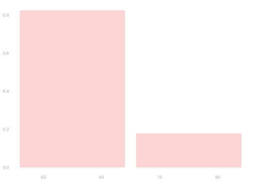
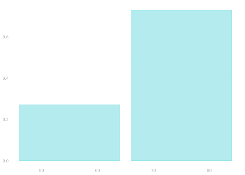
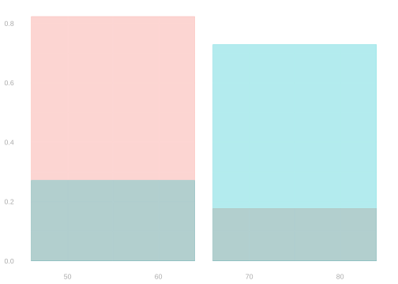
- When we switch from emails to calls, the distribution of ages shifts to the right.
- And the trend is that donations increase with age.
- What does this mean for the raw difference in means?
\[ \color{gray} \begin{aligned} \hat\Delta_{\text{raw}} &= \textcolor[RGB]{0,191,196}{\frac{1}{N_1} \sum_{i:W_i=1} Y_i} - \textcolor[RGB]{248,118,109}{\frac{1}{N_0} \sum_{i:W_i=0} Y_i} \\ &= \sum_x \textcolor[RGB]{0,191,196}{P_{x|1}} \ \textcolor[RGB]{0,191,196}{\hat\mu(1,x)} - \sum_x \textcolor[RGB]{248,118,109}{P_{x | 0}} \ {\textcolor[RGB]{248,118,109}{\hat\mu(0,x)}} \\ &= \underset{\text{adjusted difference} \ \hat\Delta_1}{\sum_x \textcolor[RGB]{0,191,196}{P_{x|1}} \{\textcolor[RGB]{0,191,196}{\hat\mu(1,x)} - \textcolor[RGB]{248,118,109}{\hat\mu(0,x)}\}} + \qty{\underset{\text{covariate shift term}}{\sum_x \textcolor[RGB]{0,191,196}{P_{x|1}} \ \textcolor[RGB]{248,118,109}{\hat\mu(0,x)} - \sum_x \textcolor[RGB]{248,118,109}{P_{x|0}} \ \textcolor[RGB]{248,118,109}{\hat\mu(0,x)}}} \end{aligned} \]
Covariate Shift in the Whole Dataset
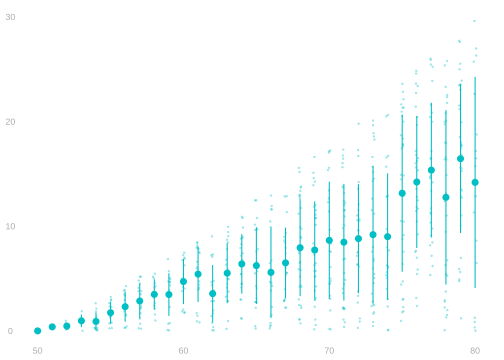
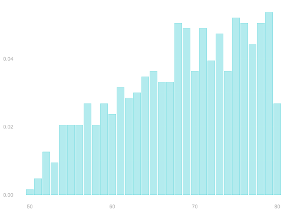
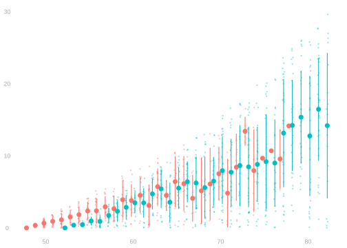
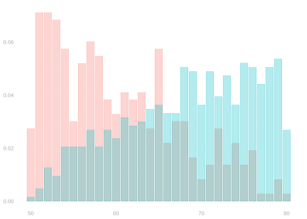
\[ \color{gray} \begin{aligned} \hat\Delta_{\text{raw}} &= \textcolor[RGB]{0,191,196}{\frac{1}{N_1} \sum_{i:W_i=1} Y_i} - \textcolor[RGB]{248,118,109}{\frac{1}{N_0} \sum_{i:W_i=0} Y_i} \\ &= \sum_x \textcolor[RGB]{0,191,196}{P_{x|1}} \ \textcolor[RGB]{0,191,196}{\hat\mu(1,x)} - \sum_x \textcolor[RGB]{248,118,109}{P_{x | 0}} \ {\textcolor[RGB]{248,118,109}{\hat\mu(0,x)}} \\ &= \underset{\text{adjusted difference} \ \hat\Delta_1}{\sum_x \textcolor[RGB]{0,191,196}{P_{x|1}} \{\textcolor[RGB]{0,191,196}{\hat\mu(1,x)} - \textcolor[RGB]{248,118,109}{\hat\mu(0,x)}\}} + \qty{\underset{\text{covariate shift term}}{\sum_x \textcolor[RGB]{0,191,196}{P_{x|1}} \ \textcolor[RGB]{248,118,109}{\hat\mu(0,x)} - \sum_x \textcolor[RGB]{248,118,109}{P_{x|0}} \ \textcolor[RGB]{248,118,109}{\hat\mu(0,x)}}} \end{aligned} \]
What should we do about this?
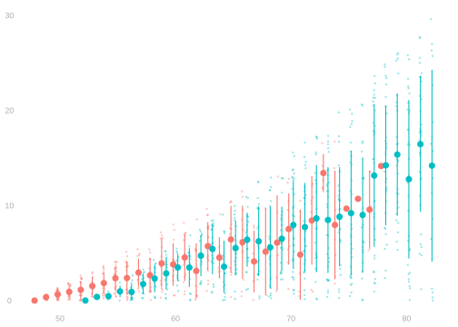

- We know how to make comparisons that aren’t influenced by covariate shift. Adjusted comparisons.
$$
- What do these tell us about our treatment effects \(\tau_j=y_j(1)-y_j(0)\)? Let’s find out.
Identification in Conditionally Randomized Experiments
If treatment assignments are conditionally independent of the potential outcomes given covariates
\[
\text{ i.e. if } \ W_i \qqtext{ is independent of } \{Y_i(0), Y_i(1)\} \qqtext{ conditional on } X_i
\]
then we can identify potential outcome means within groups with the same covariate value.
It’s a conditional version of the same formula.
\[ \begin{aligned} \mu(w,x) &= \mathop{\mathrm{E}}[Y_i \mid W_i=w, X_i=x] = \mathop{\mathrm{E}}[Y_i(w) \mid X_i=x] = \frac{1}{m_x} \sum_{j:x_j=x} y_j(w) \\ \qfor &m_x = \frac{1}{n} \sum_{i=1}^n 1_{=x}(X_i) \end{aligned} \]
Conditional Independence and Irrelevance
- Let’s think about conditioning using multi-stage sampling.
- Stage 1. We sample \(X_i\)
- Stage 2.
- We sample \(\{Y_i(0), Y_i(1)\}\) from the subpopulation with that level of \(X_i\)
- We choose \(W_i\) by flipping a coin with probability \(\pi(X_i)\) of heads.
- What we observe is \(W_i\), \(X_i\), and \(Y_i=Y_i(W_i)\).
- Conditional independence is just independence in the probability distribution describing Stage 2.
- A consequence we’ll use here is the irrelevance of conditionally independent conditioning variables.
\[ \mathop{\mathrm{E}}[Y \mid W, X] = \mathop{\mathrm{E}}[Y \mid X] \qqtext{ if } W \qqtext{ is independent of } \{Y(0), Y(1)\} \qqtext{ conditional on } X \]
Formula Derivation
\[ \begin{aligned} \mathop{\mathrm{E}}[Y_i \mid W_i=w, X_i=x] &\overset{\texttip{\small{\unicode{x2753}}}{$Y_i=Y_i(W_i)$}}{=} \mathop{\mathrm{E}}[Y_i(W_i) \mid W_i=w, X_i=x] \\ &\overset{\texttip{\small{\unicode{x2753}}}{$Y_i(W_i)=Y_i(w)$ when $W_i=w$}}{=} \mathop{\mathrm{E}}[Y_i(w) \mid W_i=w, X_i=x] \\ &\overset{\texttip{\small{\unicode{x2753}}}{irrelevance of conditionally independent conditioning variables}}{=} \mathop{\mathrm{E}}[Y_i(w) \mid X_i=x] \\ &\overset{\texttip{\small{\unicode{x2753}}}{$Y_i(w)$ is sampled uniformly at random from the potential outcomes $y_j(w)$ of the $m_x$ units with $X_i=x$}}{=} \frac{1}{m_x} \sum_{j:x_j=x} y_j(w) \qfor m_x = \frac{1}{n} \sum_{i=1}^n 1_{=x}(X_i) \end{aligned} \]
Consequence for Treatment Effects within Groups
\[ \begin{aligned} \mu(1,x) - \mu(0,x) &= \mathop{\mathrm{E}}[Y_i(1) \mid X_i=x] - \mathop{\mathrm{E}}[Y_i(0) \mid X_i=x] \\ &= \frac{1}{m_x} \sum_{j:x_j=x} y_j(1) - \sum_{j:x_j=x} y_j(0) \\ &= \frac{1}{m_x} \sum_{j:x_j=x} \qty{y_j(1) - y_j(0)} \\ &= \frac{1}{m_x} \sum_{i:x_i=x} \tau_j \end{aligned} \]
- We call this the Conditional Average Treatment Effect (CATE).
- We write it as \(\tau(x)\) in mathematical notation.
- When we have conditional randomization, our adjusted comparisons are unbiased estimators of averages of the CATE \(\tau(x)\) over groups.
- \(\hat\Delta_1\) averages over the green dots, i.e., the treated individuals.
- \(\hat\Delta_0\) averages over the red dots, i.e., the untreated individuals.
- \(\hat\Delta_{\text{all}}\) averages over all the individuals.
- Let’s prove that for \(\hat\Delta_{\text{all}}\). We’ll see the others for homework.
Unbiasedness of \(\hat\Delta_{\text{all}}\)
\[ \begin{aligned} \mathop{\mathrm{E}}[\hat\Delta_\text{all}] &=\mathop{\mathrm{E}}\qty[\sum_x P_{x} \ \qty{\hat \mu(1,x) - \hat\mu(0,x) }] \\ &\overset{\texttip{\small{\unicode{x2753}}}{law of iterated expectations}}{=} \mathop{\mathrm{E}}\qty[\mathop{\mathrm{E}}\qty[ \sum_x P_{x} \ \qty{\hat \mu(1,x) - \hat\mu(0,x)} \mid (W_1, X_1) \ldots (W_n, X_n)]] \\ &\overset{\texttip{\small{\unicode{x2753}}}{linearity of conditional expectation}}{=} \mathop{\mathrm{E}}\qty[\sum_x P_{x} \ \qty{\mathop{\mathrm{E}}\qty[\hat\mu(1,x) \mid (W_1,X_1) \ldots (W_n,X_n)] - \mathop{\mathrm{E}}\qty[\hat\mu(0,x) \mid (W_1,X_1) \ldots (W_n,X_n)]}] \\ &\overset{\texttip{\small{\unicode{x2753}}}{unbiasedness of the sample mean}}{=} \mathop{\mathrm{E}}\qty[\sum_x P_{x} \ \qty{\mu(1,x) - \mu(0,x)}] \\ &\overset{\texttip{\small{\unicode{x2753}}}{identification: $\tau(x)=\mu(1,x)-\mu(0,x)$}}{=} \mathop{\mathrm{E}}\qty[\sum_x P_{x} \ \tau(x)] \\ &\overset{\texttip{\small{\unicode{x2753}}}{linearity of expectation}}{=} \sum_x \mathop{\mathrm{E}}[P_{x}] \ \tau(x) \\ &\overset{\texttip{\small{\unicode{x2753}}}{unbiasedness of sample proportions and def of $\tau(x)$}}{=} \sum_x p_{x} \ \frac{1}{m_x}\sum_{j:x_j=x} \tau_j \qfor p_{x} = \mathop{\mathrm{E}}[P_{x}]=\frac{m_x}{m} \\ &\overset{\texttip{\small{\unicode{x2753}}}{rewriting our sum of column sums as a single sum}}{=} \sum_x \frac{m_x}{m} \ \frac{1}{m_x}\sum_{j:x_j=x} \tau_j = \frac{1}{m}\sum_{j=1}^m \tau_j \end{aligned} \]
- This is the average of the individual treatment effects \(\tau_j\) over the whole population.
- Or, for short, the average treatment effect or ATE.